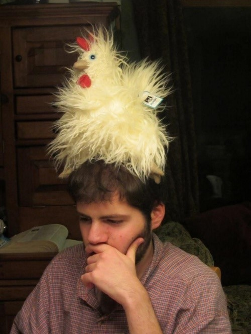

We can annotate more pictures to get a better sense of humor tells:
Above, the woman brightens, flushes, eye twinkles, smiles, thinks fast, focuses on present, has energy, social seeks (turns to comment to someone), social tightens (slows pace to let others get closer), and so on.
Since there are many humor tells that are clearly expressed, humor is the majority of her emotional state:
Even though we often think of humor as something expressed with laughter and smiles, this isn’t always the case. We can see this in the picture below, where the man is feeling humor without smiling or laughing:

The man above is touching self, making efforts to spread humor, focusing on present, and showing non-normative behavior. So even though there’s no smile, there are enough other humor tells for us to say there's humor in his emotional state.
Consider:
In the picture above we're using behavior to identify humor. The man is making a choice to spread humor and have non-normative behavior. If he wasn’t feeling humor, he wouldn’t be making these choices—he’d instead take the chicken off his head.
Even though we can identity humor in the man above, there aren’t enough humor tells for us to think his humor is particularly intense or prominent. In this case, we’d see his humor as part of a mixed emotional state:
We can look at another picture where humor is a minor part of a mixed emotional state:
Above, the man has (partially) expansive posture, a (light) smile, touching self, (unenthusiastic) social seeking. These humor tells help us see there’s at least some humor in his emotional state.
Consider:
If the man had no humor, he would have more inverse humor tells: instead of smiling, he would be frowning—instead of expansive posture, he would have contracting posture—and so on. Since this isn’t the case, we can say that there’s at least some humor in his emotional state.
The man isn’t just expressing humor tells, but other emotion tells at the same time—these other emotion tells show exasperation, frustration, tiredness, and so on. Because of this, we'd say the man has a mixed emotional state that includes some humor, but not much.
Sometimes emotion tells are things we observe directly, like smiles. But other times emotion tells can be inferred indirectly. This is like how we can sometimes gauge our partner’s emotional state without directly observing them by:
what's on their grocery receipt
what they’ve been watching recently
whether they leave early or late
how many hours they’ve spent playing which game
(and so on)
That's because emotion tells are more than facial expressions—emotion tells are also behavior too. This is obvious with cats. Since they have a very limited range of facial expressions, we learn to pay attention to their behavior to learn their emotional states.
if a cat is afraid, it hides
if it’s in a good mood, it looks for people
if it’s stressed, it pees everywhere
(and so on)
What confirms the cat's emotion isn't it's face (which expresses little), but its behavior—the cat's absence or the cat’s pee are themselves “emotion tells.” It's the same for humans. While we express emotions directly, like with our faces, we also express them through behavior—which is as true for humor as it is for anger, sadness, and so on.